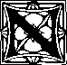
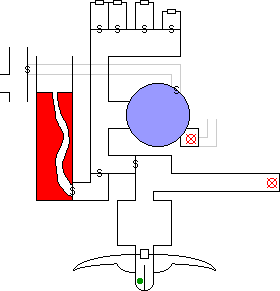

Chapter 14: Desatysso, I Presume?
"Death would be a welcome release." -- Desatysso
"That we can do." -- Zem

othing now stood between our heros and the Fortress of Conclusion. After a
mercifully brief bout of wallowing in indecision, the shackles were unlocked
and the Phantom of the Void crouched
on the platform to allow its passengers to mount. Tying ropes about its
tentacles to provide a hold, the party clambered aboard. The Phantom continued
to crouch. Adjusting their gear and weaponry, the adventurers made themselves
as comfortable as one can be atop a slimy tentacled creature. The Phantom
continued to crouch. Finally, Haer said, "Um, Take us to the Fortress of
Conclusion? To Acerak?" and the Phantom waddled to the edge to launch
itself downwards.
The Phantom (unaccountably christened "Snuggles" by the
players) plunged downwards through the mists beneath Moil, picking up speed as
it fell. The mist was moist and clammy and very, very cold, becoming ever more
dark as the strange creature plummeted. Finally it broke through the furthest
reaches of mist, soaring into a vast Void of Emptiness in all directions. The
Phantom spread its huge wings and seemed to level off, flapping occasionally
to maintain its forward progress. Zem sensed that the Flyer was maintaining
some sort of barrier to protect its riders from the effects of the plane
through which they travelled. After an interminable period travelling through
mind-numbing Nothingness a change could be perceived. Ahead, a dim green glow
relieved the utter darkness. As the Phantom continued the glow grew more
pronounced and distinct until at last it could be seen to emanate from an
ancient, rusted lamppost. The fixture cast its light on an enormous demonic
head of stone, the Sign of the Devourer. The lamp sprouted from the tongue of
the visage, which served as a landing pad in front of a rusted iron door
bearing the inscription, "Fortress of Conclusion."
Kurik's report to the Church
Though I fear the transport of this missive from my current
location in the Negative Material Plane to be beyond the power of the tithing
bag, nonetheless I shall make the attempt in hopes that by some miracle of
Pandeos the message will reach its destination.
The Flyer landed in front of the gate of the very Fortress itself.
We disembarked, and cast spells to know of what lay ahead. I cast Detect
Enemies, and was stunned by the result. There were, at minimum, 150,000
enemies within the range of the magic. I urge that researches be undertaken to
adjust the force with which the Detect Enemies litany imparts its
findings in the presence of large numbers, as I was left with a severe
headache for several hours thereafter.
Further magics by the elf Rosvenir determined that besides
ourselves and the Flyer there were only five sentient creatures. He also
learned that they were a human magic user, two extra-planar beings (one
strong and one weak), an extremely large elemental, and an elvish fighter. We
cautiously opened the steel door and, casting defensive magics, entered the
stronghold of the Devourer.
The Narrator

A short hallway led to a small, square chamber. Painted on every
available inch of the plastered walls and ceiling was a cacophony of images: a
large dragon flying through a scarlet cloud and fighting a tentacled foe, a
group of man sized insects killing peasant human farmers, purple worms
rampaging across the countryside laying waste to civilization, and so on. In
the center of the room a beautiful elvish woman sat lotus-style, deep in
meditation. She faced a painting of a high elvish mage holding a dagger with
an absolutely precious look of surprise on his face.
After a moments hesitation, Rosvenir spoke. "Hi there,"
he said, or rather he said the High Elvish equivalent of "hi
there" which is actually several sentences long and quite formal. This
startled the elfess out of her meditation, and she rose to fighting stance
in fluid motion. After a few tense moments of conversation, she relaxed and
explained that she and her companion had Gated in to the Fortress of
Conclusion, but he had touched a dagger to the wall of this room and been
imprisoned in the fresco ("Oh look, he's a stucco elf." -- Kurik).
Her name is Meilu, and she was sent by The Goddess to destroy Acerak. Her
companion is Fineas, an elvish mage.
Endira's Item Analysis determined that the wall did indeed
entrap living creatures, and would regenerate itself if damaged. There was
also some third ability which the spell could not identify. Kurik was able to
Neutralize the curse affecting Fineas, and the elf stepped forth from the
plaster. After brief introductions and explanation, Fineas and Meilu decided
to join their fellow Player Characters.
 Kahlen's Journal
Kahlen's Journal
We made very sure to not touch any of the walls as we left that
room. The hallway exited through the gaping maw of one of the purple worms
painted on the wall. Whoever decorated the Fortress had a twisted sense of
humor. As we walked down the hall, I at first thought the walls must be
reflecting the sound of our footsteps in some bizarre fashion. Then I
perceived someone trying to make mental contact. Rosvenir glanced at me,
indicating that he sensed it too: almost a moan. Then, I heard the voice in my
mind: "is anyone there?" We proceeded cautiously.
In the small room beyond was a sight which will haunt me for
decades. Hanging upside down from the ceiling was a wretched human. His arms
and legs were bound tightly to his sides, strong threads piercing his flesh at
intervals. His eyes and mouth had been sewn closed. He was somehow
managing to concentrate on a spell of the Mentalism realm to silently
communicate with Rosvenir and myself. "Release me from this horrible
bondage," came the voice.
The Narrator
Not wishing to fall prey to some sort of demonic trick, Rosvenir
asked who the man was. The mental response came several heartbeats later, as
though the remembrance of his name taxed the man greatly:
"Desatysso." Mystical's Mind Probe sensed no treachery, and
so Kurik cut the strap and lowered the poor wretch to the floor. Mystical
asked who had done this to him, and got a vision of the threads flying from
the shadows and through the air to embed themselves into his flesh. Acerak had
bound him thus.
Kahlen retrieved a sharp scalpel, and cut the first thread securing
the mage's mouth. His scream was gut-wrenching, as though the cutting
of the thread had grievously wounded him. Kahlen cast a powerful healing spell
to restore the wizard, and was shocked that it had absolutely no effect. The spell
binding Desatysso prevented healing magic from affecting him.
After several minutes to recover, Desatysso was able to recast the
spell allowing mental communication. He had lost track of the amount of time
he had been trapped within this Fortress, kept alive by the magic of his
captor. His wits were at their end, and his endurance well past spent. He
wished to be allowed to die.
Desatysso agreed to think back over what he had encountered in the
fortress, that Mystical with her Mind Probe might know of what dangers
lay ahead.
Desatysso's fevered memories
Riding on the back of the Phantom, through the astonishing cold of the
Void towards a green glow. There is a skeleton dressed in fine robes, cleaning
the lamp. "Only one? I've no use for one. The investiture of my
consciousness into the Void requires more than one. What ever shall I do with
you?" The skeletal mage lifted its arms as if to cast a spell, but Desatysso
was faster. The undead magic-user was smashed to bits by a Lightning Bolt.
Desatysso remembers being surprised at how easy it was.
The memories come all ajumble now. There is a pit filled with animated
bones, twitching. A hint of an entity of abysmal power, kept bound and
controlled by some unknown ritual. A glimpse of an evil laboratory, wicked
instruments laid out on benches. Skeletons frozen in ice. Finally, gazing into
a crystal with numerous facets, and within each facet a screaming face. Then
the threads fly from the darkness...
Zembahk Kaydian
It was apparent to me, and to Desatysso himself, that he could not
be extricated from his predicament. Death would be his only release. I made
ready to perform the coup de grace, but first to fulfill the mission which had
brought me to this place. I told Desatysso of his son, and how I had come to
respect him. I told Desatysso that before his own death, his son had forgiven
him, and that I had vowed to deliver this message to his father.
The news of his son's death saddened Desatysso, but the knowledge
of his forgiveness seemed to lighten his burden. I hope the knowledge gives
his spirit peace in whatever realm the souls of the lesser races run off to
after their brief existence. When he had composed himself, he indicated to
Rosvenir that he was ready. I plunged the sword into his chest, finally ending
his torment.
Then a strange thing happened. I felt a tingling, and identified it as an Arcane magic wrapping its tendrils about me. I attempted to avoid the effect, but it was too late. The threads and straps which had pierced Desatysso's form these past decades pulled themselves loose, and scuttled quickly across the stone floor. I sliced the largest of the straps in two and fended off the rest for a brief moment, but it was futile. The sword wrenched from my grasp as the larger cords punctured my skin and sinew and drew my arms to my sides. I felt an excruciating pain, and could no longer see. Through the burning haze I could feel myself falling and being dragged across the floor.
The Narrator
It had happened too quickly for anyone to react. Zem now hung
suspended by a strap from the hook in the ceiling, his eyes and mouth sewn
closed. Endira rushed to help him, casting Item Analysis on the threads
in hopes of finding a way to remove them. The threads are the manifestation of
a curse, which will attach themselves to anyone who kills their current
victim. Kurik attempted a Neutralize Curse, and failed. After a number
of tries he succeeded, and Zem was released with a thunk to the floor. Kurik
could only stave off the effects of the curse for 22 hours, after which it
might return. Mystical cast Store Location, in case the party needed to
return to this room to free him again.
A long, dark hallway led from the room. Zem cast
Nightvision to peer into the murkiness, and at the far end could
just discern a tall humanoid figure with oversized arms and legs. Endira cast
Anticipations to know the most likely outcome if the party were to walk
down the hallway. Result: the being would kill every last one of them and
spread their entrails on the stone to cool. Rosvenir's Mind Typing
confirmed: it is the embodiment of destructive entropy from the Negative
Material Plane. The spell also revealed the being's level (50) and its
profession, which in a moment of inspiration the GM listed as "butt
kicking".
Returning to the room where Desatysso had been bound, a careful
search revealed a secret door in the corner. Rosvenir was unable to
Merge with the wall to see what lay beyond. Haer discovered no traps,
and Fineas opened it with a Telekineses spell.
The secret door led to a hallway which
turned to the right a few paces ahead. Past the turn and on the right it
opened onto a small room where the far wall was a roiling cloud of silvery
mist. Having had enough of mist in Moil, the party continued down the hall
until reaching a brightly colored room. There were four incredibly lifelike
paintings of demons on the walls, each of which concealed a secret door. Meilu
cast Stonesight, discovering that each secret door led to a short
hallway which ended in another door. Continuing to concentrate on her spell
Meilu walked back down the hallway, discovering a crawlspace running
perpendicular to and five feet underneath the hall, and a secret door back at
the first bend.
Since opening the demonic paintings would almost certainly Gate one
in, the party decided to pursue these new possibilities instead. The secret
door at the first bend led to a short hallway which ended in a stone wall.
There was a wooden lever on the wall, under a sign which read "Push
me." Several more Anticipation spells by Endira determined that
pushing the lever would result in the floor of the room suddenly rising up to
crush against the ceiling, but that pushing the sign inwards would open a
secret door. Meilu cast Stonesight again to see through the door: it
leads to a pit filled completely with bones. An uneven catwalk is suspended
above the bones by irregular pillared supports.
The enormous pit of bones presumably represented the bulk of the
150,000 enemies Kurik's spell had detected. Having spent the day exploring the
Fortress and burning through a large number of power points, the party
determined to get some sleep before opening this new can of whoop-ass.
Mystical barricaded the space in front of the mist with walls of ice and lit a
small fire to provide warmth. Rosvenir cast Commune, asking the
question: "Which of the four secret doors conceals something we need to
complete our quest?" The answer came in booming voice, "None."
Rosvenir then cast Dream IV, to know of the things which Desatysso had
faced and which the party expected to encounter:
- What is in the evil laboratory?
- What is beyond the silver mist?
- What is behind the fourth demon door?
- How do we destroy the Devourer's phylactery?
Rosvenir's Dream
somehow, time has stopped... a pedestal, with a big book...
infinitesimally slowly, the book opens... as it opens time speeds by rapidly,
can feel my body turning to dust... the dust floats up and assumes the shape
of a crystal... The crystal is rotating, as if in orbit, and as the sun
appears in the sky the crystal is destroyed... the pieces coalesce into a
silvery mist with ebony streaks in the shape of a perfect sphere... as the
mist gets closer, can see individual containers of all types... bottles, jars,
boxes, bags... each is filled with something different, though nothing seems
to be alive...
Day 29
Fineas cast Unstone to create an
opening to the crawlspace under the hall, and the party lowered Haer and
Meilu to explore it. The crawlspace was 5 feet wide and 3 feet tall. At one
end was a secret door, which Stonesight revealed as leading to a
hallway. At the other end there was a secret door in the ceiling, which
Stonesight could not penetrate.
As he walked past the silvery mist, Rosvenir heard a pitiable,
"help me." Stepping closer to hear more clearly, the voice said
"is anyone there?" Various Unfog and Fogvision spells
proved ineffective, with the mist remaining stubbornly opaque until Zem cast
Gasvision. He could see a perfectly spherical chamber, with a smaller
chamber off the far side. This far chamber held numerous chains hanging down
from the ceiling, as well as a big pile of offal on the floor. Pegged to the
side of the spherical chamber was a Dretch, one of the lowliest of demonkind.
Zem experimentally poked at the mist with his finger, and felt enormous pain
for the trouble.
Mystical was able to teleport the Dretch out
of the mist, and Endira cast a Charming Song on it. The pathetic demon
was completely useless, knowing nothing of any import. However, releasing it
must have annoyed the other demon in the room as Rosvenir suddenly succumbed
to a powerful Sleep spell, pitched forward, and would have been drawn
into the mist but for the quick reaction of Mystical. She created an Ice
Wall to seal off the mist, but was immediately hit with a number of
slashing attacks by some invisible foe. She also caught a whiff of the most
amazingly bad case of B.O. the Universe has ever dredged up. Fineas cast
Vacuum IV beyond the ice wall in the spherical chamber, thinking to
destroy whatever foe lurked there. An enormous thunderclap was heard and large
cracks formed in the wall of ice, but it held.
Whatever it was must
have made it past the ice wall, because it attacked Mystical again. It
remained invisible throughout its attack. Meilu and Zem cast spells to detect
unseen opponents, and Fineas Hasted the two as they charged forward to
confront it.
Transcript of the proceedings of the Third Infernal Civil Court
| Plaintiff: | Unnamed Glabrezu demon |
| Defendant: | Acerak, aka The Devourer, represented by
Counsel. |
| The Honorable Judge Sceeza'zzt presiding. |
| Plaintiff's lawyer: |
Can you explain the nature of your employment to Acerak (also
known as The Devourer), and the circumstances that led to your leaving
this employment? |
| Unnamed Demon: |
Yea, sure. I was a Demon for hire, see? Mr. Acerak puts me on
retainer on a poison gas trap at dis Fortress in da Negative Material
Plane. Anyways, I've been around and I knows what sorts of stunts big
shot employers can pull on us independent demons what dat hasn't
earned our name and all. Dey think dey can treats us like
dirt. |
| Acerak's counsel: |
Objection, your honor. |
| Judge Sceeza'zzt: |
Sustained. Keep to the particulars of the case, no-name
scum. |
| Unnamed demon: |
Yes, yer honor. So anyways when we writes the contract I made sure
it ain't gonna be no certain death gig, onna count of I gots a family
to feed and all. So I's made sure I wouldn't have to get summoned to
da Prime by no magic-users what dats higher level than me, and I
wouldn't have to go up against nobodys what had Slaying
criticals. |
| Plaintiff's lawyer: |
And Acerak agreed to these terms? |
| Unnamed demon: |
Yeah, he did. Da first couple centuries of da gig was ok. I got to
kill some adventuring parties from da Prime, got to torture da
occasional Dretch, and I built dis really big pile of crap to sleep
on, which is like da BEST. |
| Plaintiff's lawyer: |
What happened then? |
| Unnamed demon: |
So den, dis party of adventurers shows up on my day off. I was
pretty pissed about dat, but I'm a professional and I'll do my job no
matta what. Dey seemed pretty wimpy, and anyways I thought da elf's
head would look pretty good dangling from da chains in my room. Den
da Kaydian pulls out dis big-ass sword and pulls a Slaying critical
on me. I couldn't believe it. His cut started at my right leg, and
went all da way up to slice my head in two. |
| Plaintiff's lawyer: |
And this has caused you economic difficulty? |
| Unnamed demon: |
Damn straight it has. I'm gonna be confined to dis layer of da
Abyss for at least da next two hundred years. Dere ain't no work here,
nothin fit for a demon of my abilities at least. I can't afford to
feed da family anymore. We hadda eat one a da kids last
week! |
| Plaintiff's lawyer: |
So the egregious violation of the terms of your contract is what
compelled you to seek compensation from the Arch-Lich
Acerak? |
| Unnamed demon: |
Damn straight. |
| Plaintiff's lawyer: |
Thank you. No more questions, your honor. Your witness. |
| Acerak's counsel: |
Thank you. You referred to your contract earlier. Were you
referring to clause 14, which states (and I quote): Employer further
guarantees that Employee will not, under any circumstances, be
required to combat any person or entity possessing weapons which
inflict criticals Of Slaying. |
| Unnamed demon: |
Yeah, dats it. |
| Acerak's counsel: |
And is it not true that the sword possessed by Mr. Zembahk
Kaydian, the implicant weapon in said combat, does not inflict
criticals Of Slaying? |
| Unnamed demon: |
No, it was a Slaying critical. I knows. |
| Judge Sceeza'zzt: |
Counsel, the employment of a Slaying critical in the combat under
question was well established during the evidence phase of this
trial. |
| Acerak's counsel: |
Your honor, my client does not dispute that the plaintiff was the
recipient of an "E" critical of Slaying. However, said
critical was not in fact the product of said sword, but of the
Death Strike spell cast by Mr. Zembahk Kaydian during the
combat in question. As such, my client contends that it does not
violate the terms laid out in the agreement. |
| Unnamed demon: |
What!?! You bast- |
| Judge Sceeza'zzt: |
AGREED. Case dismissed. |
| Unnamed demon: |
-ard!!! |
The Narrator
Fighting a foe which can remain invisible is no easy task, but our
heroes managed it. Zem and Meilu managed to inflict several hits on it before
Zem's Slaying critical took off its head. The invisible body (all six hundred
pounds of it) toppled over on top of him. The rest of the party struggled to
heave it off. Haer dusted the body with flour to get a good look at it: it was
a Glabrezu (type III) demon.
Rosvenir determined that the mist was of
an Arcane nature, and was unable to dispel it. He and Haer teleported to the
small chamber on the far side. Inside it reeked of a fish market which had
spent several weeks in the hottest desert before being left to soak in the
raw sewage of some third world country. Imposing black chains hung from the
ceiling, each ending in a wicked hook which seemed to exude a desire to
impale a victim. Holding his nose, Rosvenir cast Detect Mentalism,
Detect Essence, and Detect Channeling to locate any magic
items buried in the offal. Haer retrieved a pair of earrings which radiated
Essence, and a longsword of Channeling. Endira later identified them: the earrings grant +10 DB, but only if both are worn. The sword does an additional
Slaying critical to humanoids.
Haer also located the outlines of a trap door in the corner,
which his Stonesight spell was unable to penetrate. Mystical
teleported over in case there was trouble, complaining mightily about the
environs, and the trap door was opened. A rough hewn crawlspace led away
from the door.
Prev: Zombie Foie Gras, Served Cold |
Entrance |
Next: D. T. P.
Experience awarded for this session:
- Haer 7,000
- Mystical 7,000
- Endira 7,000
- Rosvenir 7,000
- Kurik 7,000
- Zem 7,500
- Meilu 8,000
- Fineas 7,250